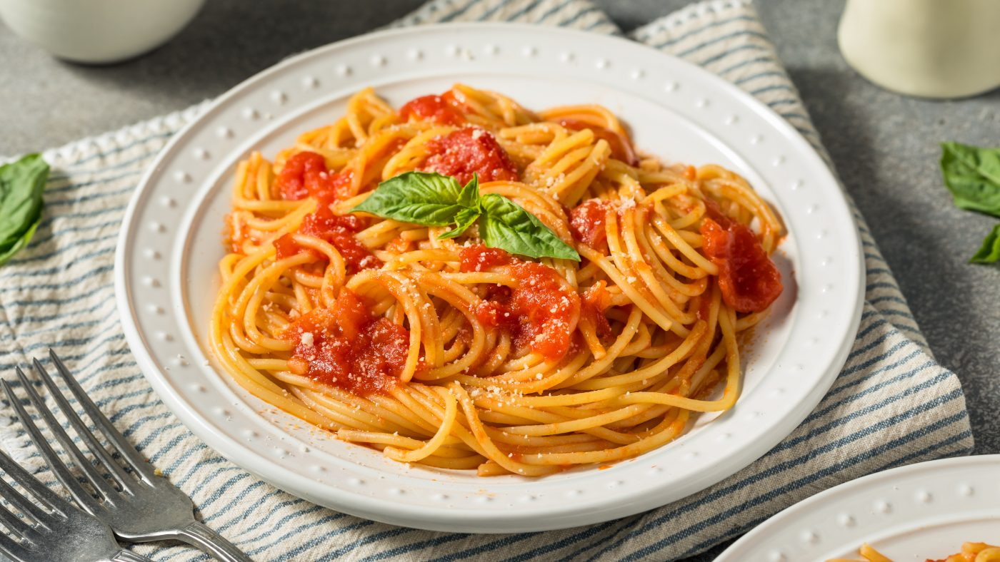

Receta de fideos con salsa
Ingredientes:
- Fideos
- Base de tomate
- Vegetales
- Condimentos
Procedimiento:
- Sofríelos en una sartén una cebolla y un ajo con un chorrito de aceite
- Añade condimentos a gusto como sal, pimienta, orégano o pimentón dulce
- Agrega 1 botella o lata de puré de tomates,Deja cocinar a fuego bajo durante unos 10 a 15 minuto
- Pon a hervir una olla grande con agua
- Agrega los fideos y remueve de vez en cuando
- Retira del fuego y cuela la pasta
- Pasa los fideos cocidos directamente a la sartén con la salsa
- Revuelve todo a fuego suave durante 1 o 2 minutos para que la pasta absorba el sabor de la salsa
- Sírvelos inmediatamente y espolvorea queso rallados
